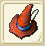
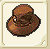
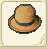
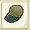
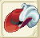
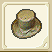

| 帽子作成 | |||||||
| 画像 | 名称 | 性能 | 材料 | ||||
| 台湾名表示 | 台湾名表示 | ||||||
| 帽子作成Lv1 | |||||||
|  | 麻布の帽子 | DEF+3〜+7 HIT+5 |
鹿の皮20、麻4 | ||||
| 麻布帽 | 鹿皮20、麻布2 | ||||||
| かたい帽子 | DEF+5〜+11 HIT+5 |
バルサ20、鹿の皮20、麻4 | |||||
| 硬帽 | 印度輕木20、鹿皮20、麻布4 | ||||||
| 帽子作成Lv2 | |||||||
| カジュアルハット | DEF+7〜+14 HIT+5 |
バルサ20、レモングラス20 麻5、木綿2 |
|||||
| 輕帽 | 印度輕木20、檸檬草20、麻布5 木棉布2 |
||||||
|  | レザーハット | DEF+8〜+18 HIT+5 |
モミ20、レモングラス20 鹿の皮20、麻6、木綿4 |
||||
| 皮帽 | 樅20、檸檬草20、鹿皮20 麻布6、木棉布3 |
||||||
| 帽子作成Lv3 | |||||||
| ハードレザーハット | DEF12〜21 HIT+5 |
銅4、鹿の皮20、木綿5、フェルト4 | |||||
| 硬皮帽 | 銅條4、鹿皮20、木棉布5、毛氈4 | ||||||
|  | プリティーハット | DEF+15〜+25 HIT+5 |
カリン20、麻6、木綿6、フェルト5 | ||||
| 可愛的帽子 | 果梨20、麻布6、木棉布6、毛氈5 | ||||||
| 帽子作成Lv4 | |||||||
| おしゃれハット | DEF+18〜+28 HIT+5 |
レモングラス20 アイリス20 麻6 フェルト6 コットン6 |
|||||
| 時髦帽子 | 檸檬草20、蝴蝶花20、麻布6、 毛氈6、棉6 |
||||||
|  | ハンチングキャップ | DEF+20〜+32 HIT+5 |
カリン20、鹿の皮20 木綿11 フェルト11 |
||||
| 鴨舌帽 | 果梨20、鹿皮20、木棉布11、毛氈11 | ||||||
| クイーンブレス | RCV+2〜+5 CRI-1〜+1 CTR-1〜+1 HIT-1〜+1 AVD-1〜+1 クエストで使用 |
純銀5 銀1 金1 チタン鉱石20 フローズンアイリス20 |
|||||
| 帽子作成Lv5 | |||||||
| エールキャップ | DEF+24〜+35 HIT+5 |
カリン20、コットン7 綿端10 | |||||
| 藍徽章之帽 | 果梨20、棉7、細線10 | ||||||
| エレガントハット | DEF+27〜+39 HIT+5 |
コケモモ20、コットン8、絹10 | |||||
| 高級帽子 | 桃木20、棉8、絹布10 | ||||||
|  | オーシュハット | DEF+9〜14 MND-10 LP+65〜73 HIT+5 AVD+3 明鏡止水スキル時に 回避が可能になる |
地クリの欠片2、ぐみの木20 コケモモ20、フェルト10 絹4 |
||||
| 劍客帽 | 地的水晶碎片2、茱萸木20 桃木20、毛氈10、絹布4 |
||||||
| 帽子作成Lv6 | |||||||
| 花飾りの麦わら帽子 | DEF+31〜+42 HIT+5 |
レモングラス20 アイリス20 カリン20 コケモモ20、コットン19 |
|||||
| 裝飾著花的帽子 | 檸檬草20、蝴蝶花20、果梨20 桃木20、棉19 |
||||||
|  | ブロンズハット | DEF+34〜+46 HIT+5 |
銅15、サフラン20、コットン14 | ||||
| 青銅帽子 | 銅條15、番紅花20、棉14 | ||||||
| 帽子作成Lv7 | |||||||
| バーティカルレイン | DEF+10 MND+20 |
タイム20、綿端10 絹10 水のクリスタルのかけら5 |
|||||
| 淑女帽 | 百里香20、細線10、絹布10 水的水晶碎片5 |
||||||
| オフィシャルキューティー | DEF+41〜+53 HIT+5 |
コケモモ20、タイム20、セレーネ糸13 火のクリスタルのかけら5 |
|||||
| 可愛的扁帽子 | 桃木20、百里香20、莎蓮娜線13 火的水晶碎片5 |
||||||
| 水龍の帽子 | DEF+53 HIT+5 MND+20 |
タイム20、マイティナイト2 魔族のクリスタル2、擦り切れた帽子1 |
|||||
| 水龍之帽 | 百里香20、鋼騎之礦2、 魔族的水晶2、破爛的帽子1 |
||||||
| 帽子作成Lv8 | |||||||
| スコードマーク | DEF+43〜+56 HIT+5 |
ナデシコ20、コットン5 綿端5 セレーネ糸10 |
|||||
| 軍帽 | 瞿麥20、棉5 細線5、莎蓮娜線10 |
||||||
| おしゃれニット | DEF+32〜+47 STN+5 CNF+5 |
サフラン20 ナデシコ20 ジェノーバスリード10 ドット家の布1 |
|||||
| 時髦避暑帽 | 番紅花20、瞿麥20 傑諾瓦線10、�ｺ特家的布1 |
||||||
| キューティーハット＋ | DEF+43〜+56 AVD+1〜+3 |
タイム20
ナデシコ20 ブルードラゴンの鱗20 マジカルキャロット20 火のクリスタルのかけら10 |
|||||
| 可愛的扁帽子+ | 百里香20、瞿麥20、藍龍之鱗20 魔法紅蘿蔔20、火的水晶碎片10 |
||||||
| おやびんの帽子 | DEF+58 HIT+5 AVD+3 盗む消費FP変化 |
クイニ20、マイティナイト3 魔族のクリスタル3、擦り切れた帽子2 |
|||||
| 頭目帽子 | 香草20、鋼騎之礦2 魔族的水晶3、破爛的帽子2 |
||||||
| 帽子作成Lv9 | |||||||
| ブルーリボン | DEF+53〜+67 HIT+5 |
タイム20 フェンネル20、鹿の皮20 セレーネ糸6 ジェノーバスリード8 |
|||||
| 羽毛帽 | 百里香20、茴香20、鹿皮20 傑諾瓦線8、莎蓮娜線6 |
||||||
| ハイドトリック | DEF+5 HIT+15 |
ナデシコ20 フェンネル20 フェルト20 ジェノーバスリード10 魔族のクリスタル2 |
|||||
| 魔術師之帽 | 瞿麥20、茴香20、毛氈20 傑諾瓦線10、魔族的水晶2 |
||||||
| 帽子作成Lv10 | |||||||
| ドナの帽子 | DEF+59〜+74 HIT+5 |
マロニエ20、コットン5 ジェノーバスリード5、アルパネッサ7 |
|||||
| 黄昏之帽 | 七葉樹20、棉5 傑諾瓦線5、細麻布7 |
||||||
| ダウメイの帽子 | DEF+55〜+62 AVD+2 リジェ消費FP変化 |
マロニエ20、絹5、カシミア5、 ドット家の布2、マンドレイクの表皮5 |
|||||
| 妖精之帽 | 七葉樹20、絹布5、開米士毛線5 �ｺ特家的布2、蔓陀羅草的皮5 |
||||||
| 帽子作成Lv11 | |||||||
| ベスハット | DEF+41〜55 SLP+20 ITX+20 AMN+20 AVD+11 |
セレーネ糸11、マロニエ40、クイニ40 マンドレイクの表皮2、ベラドンナの血1 |
|||||
| 貝斯神帽 | 莎蓮娜線11、七葉樹40、香草40 蔓陀羅草的皮2、妖草的血1 |
||||||
| 神官帽 | DEF+70〜96 POI+20 STN+20 CNF+20 HIT+11 |
カシミア16、フェンネル40、クイニ40 フレイムスピリッツ2、ドット家の布2 |
|||||
| 神官帽 | 開米士毛線16、茴香40、香草40 火焔之魂2、�ｺ特家的布2 |
||||||